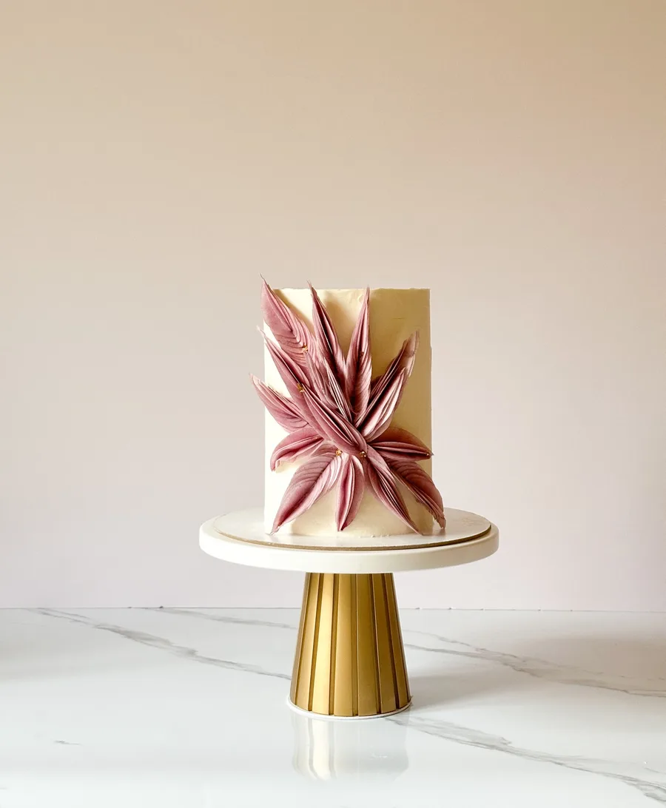

Кондитерская студия · СПб
Nevskayaторты на заказ в ЖК «Лондон Парк»
Выберите начинку, вес и оформление: сайт сразу покажет торт в разрезе и посчитает цену, а заявка уйдёт кондитеру.
- Каждый день 9:00–20:00
- Проспект Просвещения, 43, 4 этаж
- 5,0, все 8 оценок в 2ГИС на пять

Торты
Нравится торт? Нажмите «Хочу такой»
Фото прикрепится к заявке, а в расчёте само включится похожее оформление.
Расчёт торта
Соберите торт и посмотрите, что внутри
Начинка, вес и оформление. Цена считается сразу, заявка придёт кондитеру с вашей датой.
Заявка отправлена
Кондитер напишет вам, чтобы уточнить детали и подтвердить дату.
Готово: когда торт будет готов, придёт сообщение в Telegram.
Откроется бот студии: нажмите «Старт», и он напишет, когда торт будет готов. Студия увидит ваш ник. Здесь это демонстрация.
Так заявка придёт студии в Telegram
Отзывы
Что пишут гости
5,0 · 8 оценок в 2ГИС, все на пять
Коржи нежные, что буквально тают во рту… Начинка малина/фисташка идеальное сочетание. Украшение отдельное удовольствие, выглядит как десерт из модного кондитерского бутика.
Дарья, отзыв в 2ГИС
Заказал торт отцу на юбилей и не прогадал: вкус, начинка, послевкусие и декор на высшем уровне. Именинник и гости были довольны.
Антон К., отзыв в 2ГИС
Заказывала тортик на день рождения, вишня в шоколаде. Это очень очень вкусно) А какая вкусная «Картошка», я просто фанат!
Анна К., отзыв в 2ГИС
Заказывали торт маме на юбилей! Все гости были в восторге. Торт быстро сделали, забирали сами!
Жанна М., отзыв в 2ГИС
О студии
Кондитерская в ЖК «Лондон Парк»
Nevskaya работает с октября. Торты на дни рождения, юбилеи, свадьбы и корпоративы: каждый собирают под ваш праздник, от начинки до надписи. Готовый торт можно забрать в студии.
- Дни рождения
- Детские
- Юбилеи
- Свадьбы
- Корпоративы
Как найти
Проспект Просвещения, 43
Санкт-Петербург,
проспект Просвещения, 43,
4 этаж
- Каждый день с 9:00 до 20:00
- +7 952 283-14-48
Вопросы
Коротко о главном
Где находится кондитерская Nevskaya?
В Санкт-Петербурге, проспект Просвещения, 43, ЖК «Лондон Парк», 4 этаж. Открыто каждый день с 9:00 до 20:00.
Как заказать торт?
Посчитайте торт на сайте: начинка, вес, оформление и дата. Заявка придёт кондитеру, вам напишут и уточнят детали. Можно сразу написать в WhatsApp или Telegram по номеру +7 952 283-14-48.
Какие есть начинки?
Гости в отзывах хвалят «Сникерс», вишню в шоколаде и малину с фисташкой. Полный список начинок подскажет кондитер.
Можно ли забрать торт самому?
Да, готовый торт можно забрать в студии на проспекте Просвещения, 43.
Какой вес торта нужен на моё количество гостей?
Обычно считают около 150 г на гостя: торт 1,5 кг примерно на 10 человек, 3 кг примерно на 20. Калькулятор на сайте считает это сам.